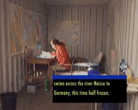

|
CONTAINED MOBILITY
Ursula Biamann | CH 2004 | 21 Min.
Format: DigiBeta
Material: 16mm
Originalsprache: Deutsch, Englisch
Drehbuch: Ursula Biemann
Kamera: Ursula Biemann
Schnitt: Ursula Biemann
Ton: Ursula Biemann
Produktion: Ursula Biemann
25. VIPER Swiss Award
www.geobodies.org
Vernetze Lektüre eines individuellen Schicksals vor dem Hintergrund globaler Entwicklungen. Biemann erstellt das komplexe Bild über die europaweiten Bewegungen eines deutsch-russischen Biologen, seinen Fluchtversuchen nach Deutschland während des Kalten Kriegs und sein Bemühen seitdem, in einem europäischen Land das Bleiberecht zu erhalten. Die formale Schichten ihrer Arbeit zeugen von der Gleichzeitigkeit, nicht anzukommen und doch da zu sein, nicht hier sein zu können und sich in der Welt zu streuen. Schichten von Simultaneität, in denen sich das bewegte Leben dieses modernen Nomaden abspielt. Seine Mobilität kennt keine nationalen oder geographischen Grenzen, und doch gerät er stets unter die nationalen Ausschlussmechanismen, die sich gegenseitig steigern und die ihm einen festen Platz in der Welt verwehren.
Ursula Biemann arbeitet als Künstlerin und Kuratorin zu Themen der Migration, Mobilität, Technologie und Geschlecht. In einer Reihe von Video Essays und mehreren Büchern untersucht sie die Gender Dimension von Migrationsarbeit vom Schmuggel an der Spanisch-Marokkanischen Grenze bis zur globalen Sexindustrie. Ihre experimentellen Videos werden an internationalen Kunstausstellungen und Festivals gezeigt. Biemann vertritt eine forschungsorientierte Kunstpraxis. Sie unterrichtet an der Kunsthochschule in Genf und forscht am Institut für Theorie an der HGKZ.
Filme: Performing the Border 1999 | Writing Desire 2000 | Remote Sensing 2001 | Europlex 2003 | Contained Mobility 2004 | Black Sea Files 2005
zurück
|